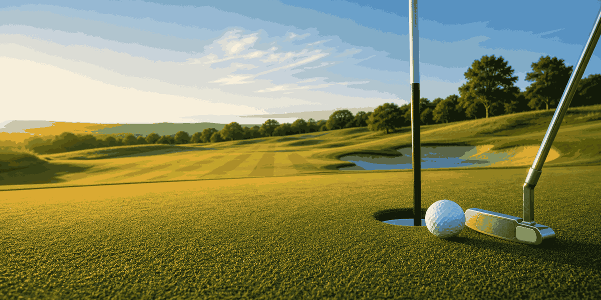
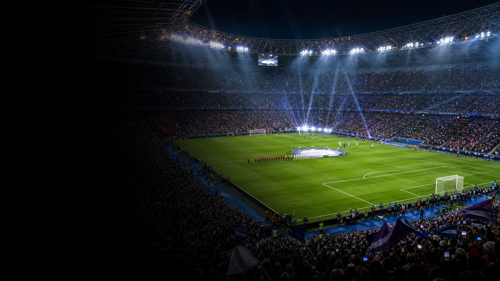
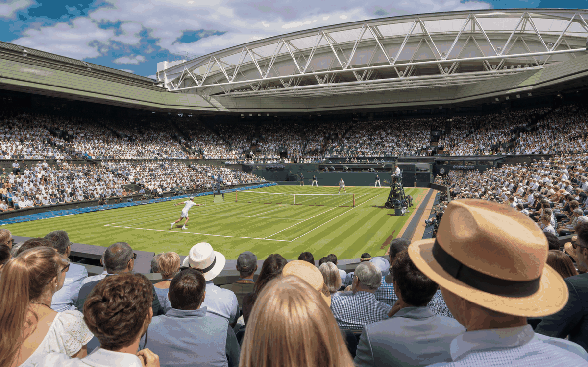
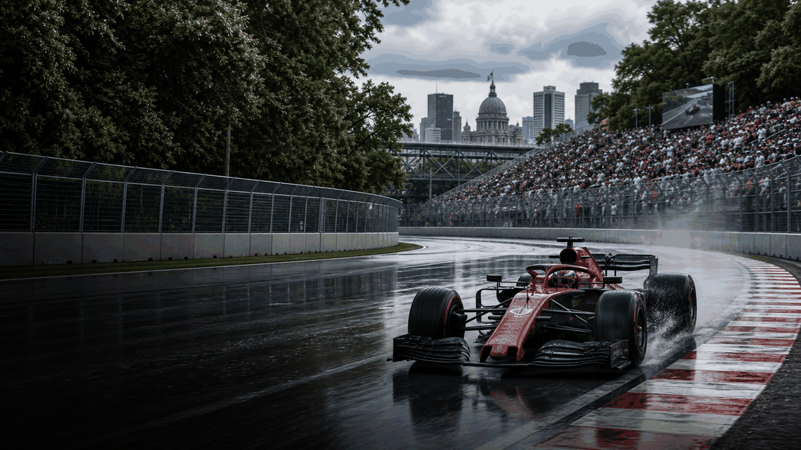
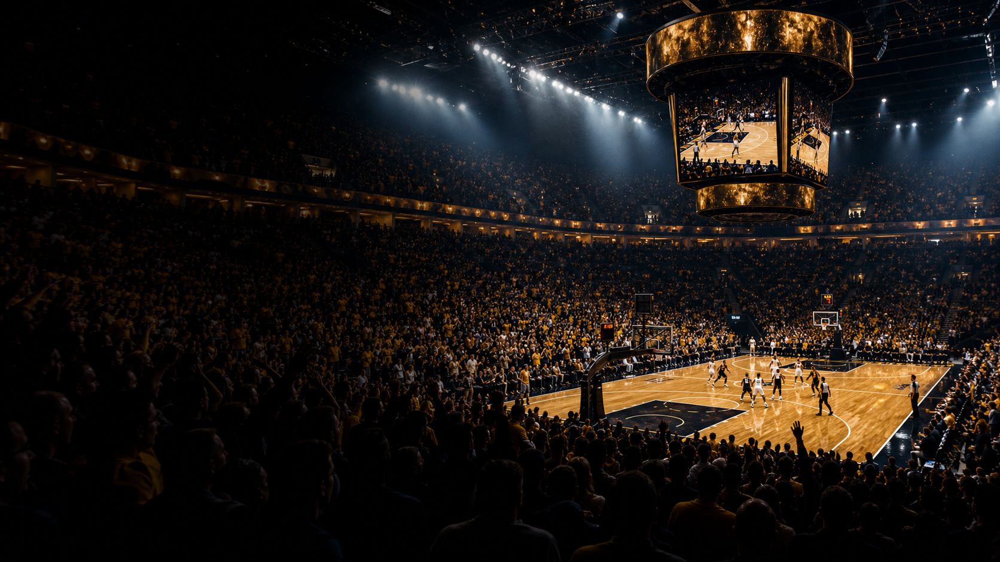
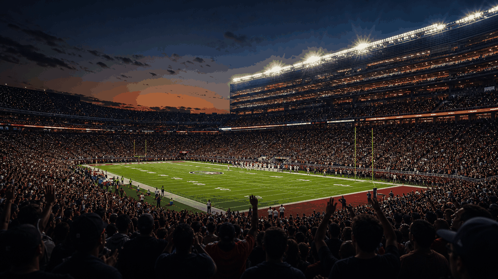
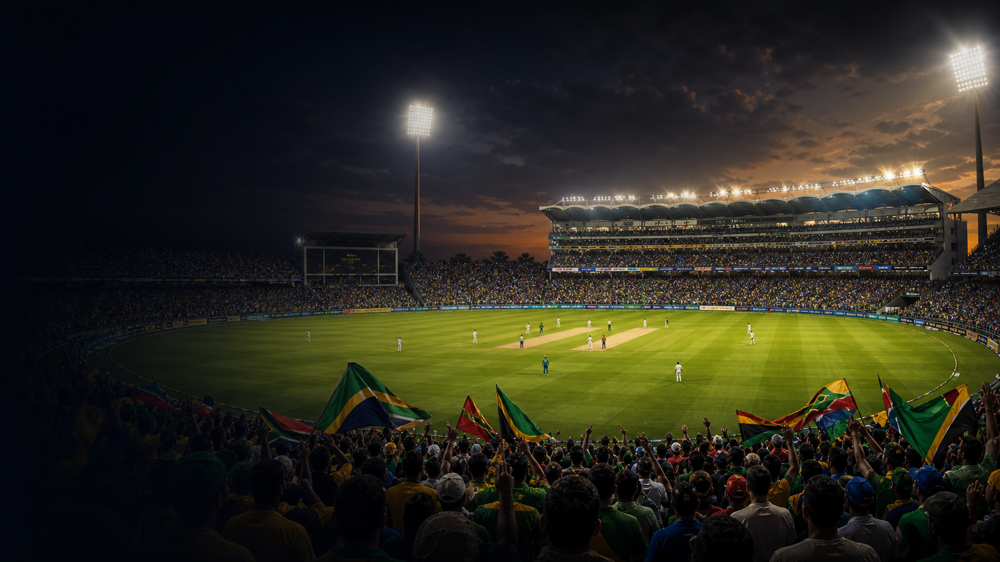
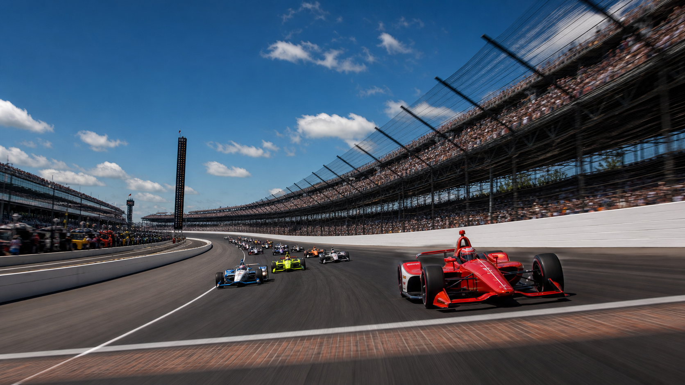
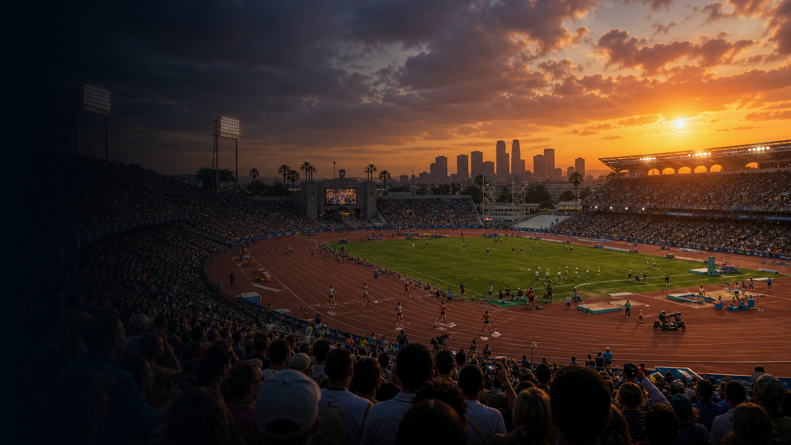
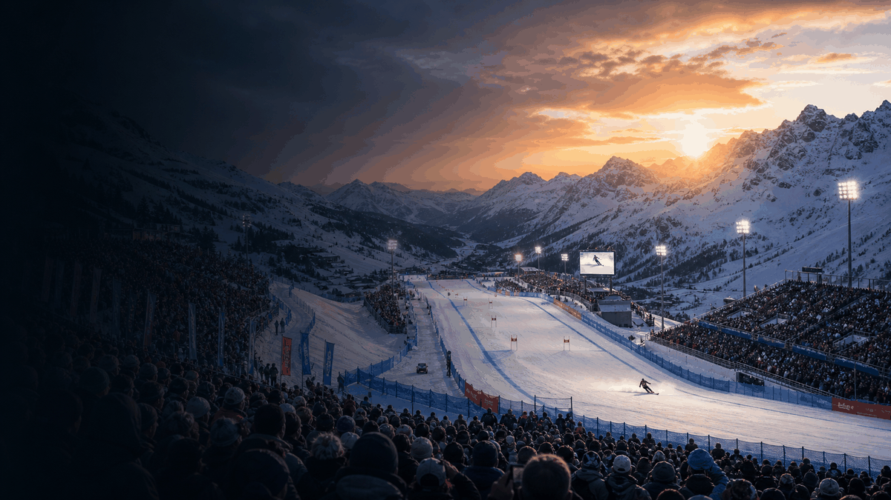

Живые календари, арены и города-хозяева
Спорт
Быстрый глобальный обзор главных видов спорта: аудитории, исторические вехи и календарные события года.
Спорт превращает места в ежегодные точки встречи: финалы на стадионах, травяные корты, городские трассы, горные дороги и поля для гольфа соединяют путешествия, историю и энергию болельщиков.
Виды спорта

ГольфГольф как OneSlider: ключевые события, места, форматы и контекст путешествий.

ФутболФутбол как OneSlider: ключевые события, места, форматы и контекст путешествий.

ТеннисТеннис как OneSlider: ключевые события, места, форматы и контекст путешествий.
Велоспорт Велоспорт
ВелоспортВелоспорт как OneSlider: ключевые события, места, форматы и контекст путешествий.

Формула-1Формула-1 как OneSlider: ключевые события, места, форматы и контекст путешествий.

БаскетболБаскетбол как OneSlider: ключевые события, места, форматы и контекст путешествий.
Бейсбол Бейсбол
БейсболБейсбол как OneSlider: ключевые события, места, форматы и контекст путешествий.
ХоккейХоккей как OneSlider: ключевые события, места, форматы и контекст путешествий.

Американский футболАмериканский футбол как OneSlider: ключевые события, места, форматы и контекст путешествий.

КрикетКрикет как OneSlider: ключевые события, места, форматы и контекст путешествий.
РегбиРегби как OneSlider: ключевые события, места, форматы и контекст путешествий.
Марафон Марафон
МарафонМарафон как OneSlider: ключевые события, места, форматы и контекст путешествий.

МотоспортМотоспорт как OneSlider: ключевые события, места, форматы и контекст путешествий.

Олимпийские игрыОлимпийские игры как OneSlider: ключевые события, места, форматы и контекст путешествий.

Горные лыжиГорные лыжи как OneSlider: ключевые события, места, форматы и контекст путешествий.
Лыжные гонкиЛыжные гонки как OneSlider: ключевые события, места, форматы и контекст путешествий.
БиатлонБиатлон как OneSlider: ключевые события, места, форматы и контекст путешествий.
КёрлингКёрлинг как OneSlider: ключевые события, места, форматы и контекст путешествий.
Фигурное катаниеФигурное катание как OneSlider: ключевые события, места, форматы и контекст путешествий.
Прыжки с трамплинаПрыжки с трамплина как OneSlider: ключевые события, места, форматы и контекст путешествий.
СноубордСноуборд как OneSlider: ключевые события, места, форматы и контекст путешествий.
Конькобежный спортКонькобежный спорт как OneSlider: ключевые события, места, форматы и контекст путешествий.
Скачки Скачки
СкачкиСкачки как OneSlider: ключевые события, места, форматы и контекст путешествий.